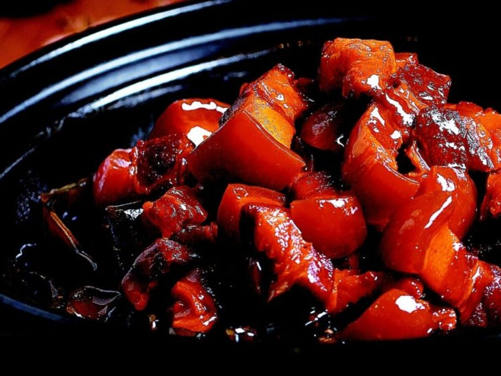

Babi Kecap

Babi Kecap is Indonesian style Braised Pork
Ingredients
- A good amount of Pork Belly
- Ginger
- Garlic
- Oyster Sauce
- Firm Tofu at least 450 grams
- 4 Eggs
- Steamed Rice
- Kecap Manis (Sweet Soy Sauce)
Steps
Preparing the Ingredients
- Chop the pork belly roughly into 1cm cubes.
- Boil eggs for 10 mins to get
hard-boiled eggs.
- Blanch pork belly to take out scum.
- Slice ginger into thin sticks.
- Finely chop garlic.
Cooking the Babi Kecap
- Heat up a wok to medium heat and the add oil
and ginger and garlic.
- Stir garlic and ginger until they start to brown
then add pork belly.
- Once the pork belly browns pour in some
kecap manis and oyster sauce to taste.
- Once the sauce is to your liking add in
a corn flour slurry to thicken the broth.
Serving the Babi Kecap
- Serve on top or with rice.